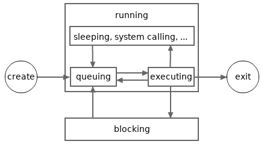

Goroutines, Deferred Function Calls and Panic/Recover
This article will introduce goroutines and deferred function calls.
Goroutine and deferred function call are two unique features in Go.
This article also explains panic and recover mechanism.
Not all knowledge relating to these features is covered in this
article, more will be introduced in future articles.
Goroutines
Goroutines are also often called green threads.
Green threads are maintained and scheduled by
the language runtime instead of the operation systems.
The cost of memory consumption and context switching,
of a goroutine is much lesser than an OS thread.
So, it is not a problem for a Go program to maintain tens of thousands
goroutines at the same time, as long as the system memory is sufficient.
Go doesn't support the creation of system threads in user code.
So, using goroutines is the only way to do concurrent programming
(program scope) in Go.
Each Go program starts with only one goroutine, we call it the main goroutine.
A goroutine can create new goroutines.
It is super easy to create a new goroutine in Go,
just use the keyword go followed by a function call.
The function call will then be executed in a newly created goroutine.
The new created goroutine will exit alongside the exit of the called function.
All the result values of a goroutine function call
(if the called function returns values)
must be discarded in the function call statement.
The following is an example which creates two new goroutines
in the main goroutine.
In the example,
time.Duration is a custom type defined
in the
time standard package.
Its underlying type is the built-in type
int64.
Underlying types will be explained in
the next article.
package main
import (
"log"
"math/rand"
"time"
)
func SayGreetings(greeting string, times int) {
for i := 0; i < times; i++ {
log.Println(greeting)
d := time.Second * time.Duration(rand.Intn(5)) / 2
time.Sleep(d) // sleep for 0 to 2.5 seconds
}
}
func main() {
rand.Seed(time.Now().UnixNano())
log.SetFlags(0)
go SayGreetings("hi!", 10)
go SayGreetings("hello!", 10)
time.Sleep(2 * time.Second)
}
Quite easy. Right? We do concurrent programming now!
The above program may have three user-created goroutines running
simultaneously at its peak during run time.
Let's run it. One possible output result:
hi!
hello!
hello!
hello!
hello!
hi!
When the main goroutine exits, the whole program also exits,
even if there are still some other goroutines which have not existed yet.
Unlike previous articles, this program uses the Println
function in the log standard package instead of the
corresponding function in the fmt standard package.
The reason is the print functions in the log standard
package are synchronized, so the texts printed by the two goroutines
will not be messed up in one line (though the chance the printed texts
being messed up by using the print functions in the fmt
standard package is low for this specific program).
Concurrency Synchronization
The above program is not perfect.
The two new goroutines are intended to print ten greetings each.
However, the main goroutine will exit in two seconds,
so many greetings don't have a chance to get printed.
How to let the main goroutine know when the two new goroutines
have both finished their tasks?
We must use something called concurrency synchronization techniques.
Go supports several
concurrency synchronization techniques.
Among them, the channel technique is the most unique and popularly used one.
However, here we will use another technique,
the WaitGroup type in the sync standard package,
to synchronize between the two new goroutines and the main goroutine.
The
WaitGroup type has three methods (special functions, will be explained later):
Add,
Done and
Wait.
This type will be explained in detail later in another article.
Here we can simply think
-
the
Add method is used to register the number of new tasks.
-
the
Done method is used to notify that a task is finished.
-
and the
Wait method makes the caller goroutine become blocking until all registered tasks are finished.
Example:
package main
import (
"log"
"math/rand"
"time"
"sync"
)
var wg sync.WaitGroup
func SayGreetings(greeting string, times int) {
for i := 0; i < times; i++ {
log.Println(greeting)
d := time.Second * time.Duration(rand.Intn(5)) / 2
time.Sleep(d)
}
// Notify a task is finished.
wg.Done() // <=> wg.Add(-1)
}
func main() {
rand.Seed(time.Now().UnixNano())
log.SetFlags(0)
wg.Add(2) // register two tasks.
go SayGreetings("hi!", 10)
go SayGreetings("hello!", 10)
wg.Wait() // block until all tasks are finished.
}
Run it, we can find that, before the program exits,
each of the two new goroutines prints ten greetings.
Goroutine States
The last example shows that a live goroutine may stay in (and switch between)
two states, running and blocking.
In that example, the main goroutine enters the blocking state when the
wg.Wait method is called, and enter running state again
when the other two goroutines both finish their respective tasks.
The following picture depicts a possible lifecycle of a goroutine.
Note, a goroutine in sleeping (by calling time.Sleep function)
or waiting the response of a system call or a network connection
is viewed as staying in running state.
When a new goroutine is created, it will enter running state automatically.
Goroutines can only exit from running state, and never from blocking state.
If, for any reason, a goroutine stays in blocking state forever,
then it will never exit.
Such cases, except some rare ones, should be avoided in concurrent programming.
A blocking goroutine can only be unblocked by
an operation made in another goroutine.
If all goroutines in a Go program are in blocking state,
then all of them will stay in blocking state forever.
This can be viewed as an overall deadlock.
When this happens in a program, the standard Go runtime
will try to crash the program.
The following program will crash, after two seconds:
package main
import (
"sync"
"time"
)
var wg sync.WaitGroup
func main() {
wg.Add(1)
go func() {
time.Sleep(time.Second * 2)
wg.Wait()
}()
wg.Wait()
}
The output:
fatal error: all goroutines are asleep - deadlock!
...
Later, we will learn more operations which will make goroutines enter blocking state.
Goroutine Schedule
Not all goroutines in running state are being executed at a given time.
At any given time, the maximum number of goroutines being executed will
not exceed the number of the logical CPUs available for the current program.
We can call the runtime.NumCPU
function to get the number of logical CPUs available for the current program.
Each logical CPU can only execute one goroutine at any given time.
Go runtime must frequently switch execution contexts between goroutines
to let each running goroutine have a chance to execute.
This is similar to how operating systems switch execution contexts between OS threads.
The following picture depicts a more detailed possible lifecycle for a goroutine.
In the picture, the running state is divided into several more sub-states.
A goroutine in the queuing sub-state is waiting to be executed.
A goroutine in the executing sub-state may enter the queuing sub-state
again when it has been executed for a while (a very small piece of time).

Please note, for simplicity, the sub-states shown in the above
picture will be not mentioned in other articles in Go 101.
And again, in Go 101, the sleeping and system calling sub-states are not viewed
as sub-states of the blocking state.
The standard Go runtime adopts the
M-P-G model
to do the goroutine schedule job,
where M represents OS threads,
P represents logical/virtual processors (not logical CPUs)
and G represents goroutines.
Most schedule work is made by logical processors (Ps),
which act as brokers by attaching goroutines (Gs) to OS threads (Ms).
Each OS thread can only be attached to at most one goroutine at any given time,
and each goroutine can only be attached to at most one OS thread at any given time.
A goroutine can only get executed when it is attached to an OS thread.
A goroutine which has been executed for a while will try to detach itself from the corresponding OS thread,
so that other running goroutines can have a chance to get attached and executed.
At runtime. we can call the runtime.GOMAXPROCS
function to get and set the number of logical processors (Ps).
For the standard Go runtime, before Go 1.5, the default initial value of this number is 1,
but since Go 1.5, the default initial value of this number is equal to
the number of logical CPUs available for the current running program.
The default initial value (the number of logical CPUs) is the best choice for most programs.
But for some file IO heavy programs, a GOMAXPROCS value larger than runtime.NumCPU() may be helpful.
The default initial value of runtime.GOMAXPROCS can also be set through the GOMAXPROCS environment variable.
At any time, the number of goroutines in the executing sub-state is no more than
the smaller one of runtime.NumCPU and runtime.GOMAXPROCS.
Deferred Function Calls
A deferred function call is a function call which follows a defer keyword.
Like goroutine function calls,
all the result values of the function call (if the called function returns values)
must be discarded in the function call statement.
When a function call is deferred, it is not executed immediately.
It will be pushed into a defer-call stack maintained by its caller goroutine.
After a function call fc(...) returns and enters its
exiting phase,
all the deferred function calls pushed in the function call (fc...)
(which has not exited yet) will be executed,
by their inverse order being pushed into the defer-call stack.
Once all these deferred calls are executed,
the function call fc(...) exits.
Here is a simple example to show how to use deferred function calls.
package main
import "fmt"
func main() {
defer fmt.Println("The third line.")
defer fmt.Println("The second line.")
fmt.Println("The first line.")
}
The output:
The first line.
The second line.
The third line.
In fact, each goroutine maintains two call stacks, the normal-call stack and defer-call stack.
-
For two adjacent function calls in the normal-call stack of a goroutine,
the later pushed one is called by the earlier pushed one.
The bottom function call in the normal-call stack is the function call
following the
go keyword.
-
The function calls in the defer-call stack have no calling relations.
Here is another example which is a little more complex.
The example will print
0 to
9,
each per line, by their natural order.
package main
import "fmt"
func main() {
defer fmt.Println("9")
fmt.Println("0")
defer fmt.Println("8")
fmt.Println("1")
if false {
defer fmt.Println("not reachable")
}
defer func() {
defer fmt.Println("7")
fmt.Println("3")
defer func() {
fmt.Println("5")
fmt.Println("6")
}()
fmt.Println("4")
}()
fmt.Println("2")
return
defer fmt.Println("not reachable")
}
Deferred Function Calls Can Modify the Named Return Results of Nesting Functions
For example,
package main
import "fmt"
func Triple(n int) (r int) {
defer func() {
r += n // modify the return value
}()
return n + n // <=> r = n + n; return
}
func main() {
fmt.Println(Triple(5)) // 15
}
The Necessary and Benefits of the Deferred Function Feature
In the above examples, the deferred function calls are not absolutely necessary.
However, the deferred function call feature is a necessary feature for the
panic and recover mechanism which will be introduced below.
Deferred function calls can also help us write more clean and robust code.
We can read more code examples by using deferred function calls
and learn more details on deferred function calls in the article
more about deferred functions later.
The Evaluation Moment of the Arguments of Deferred and Goroutine Function Calls
The arguments of a deferred function call or a goroutine function call are all
evaluated at the moment when the function call is invoked.
-
For a deferred function call, the invocation moment is the moment
when it is pushed into the defer-call stack of its caller goroutine.
-
For a goroutine function call, the invocation moment is
the moment when the corresponding goroutine is created.
The expressions enclosed within the body of an anonymous function call,
whether the call is a general call or a deferred/goroutine call,
will not be evaluated at the moment when the anonymous function call is invoked.
Here is an example.
package main
import "fmt"
func main() {
func() {
for i := 0; i < 3; i++ {
defer fmt.Println("a:", i)
}
}()
fmt.Println()
func() {
for i := 0; i < 3; i++ {
defer func() {
fmt.Println("b:", i)
}()
}
}()
}
Run it. The output:
a: 2
a: 1
a: 0
b: 3
b: 3
b: 3
The first loop prints i as 2, 1 and 0 as a sequence.
The second loop always prints i as 3,
for when the three fmt.Println calls in the deferred anonymous calls are invoked,
the value of the loop variable i becomes 3.
To make the second loop print the same result as the first one,
we can modify the second loop as
for i := 0; i < 3; i++ {
defer func(i int) {
// The "i" is the input parameter.
fmt.Println("b:", i)
}(i)
}
or
for i := 0; i < 3; i++ {
i := i
defer func() {
// The "i" is not the loop variable.
fmt.Println("b:", i)
}()
}
The same argument valuation moment rules are for goroutine function calls.
The following program will output
123 789.
package main
import "fmt"
import "time"
func main() {
var a = 123
go func(x int) {
time.Sleep(time.Second)
fmt.Println(x, a) // 123 789
}(a)
a = 789
time.Sleep(2 * time.Second)
}
By the way, it is not a good idea to do synchronizations by using time.Sleep calls in formal projects.
If the program runs on a computer which CPUs are occupied by many other
programs running on the computer, the newly created goroutine may never
get a chance to execute before the program exits.
We should use the concurrency synchronization techniques introduced in the article
concurrency synchronization overview
to do synchronizations in formal projects.
Panic and Recover
Go doesn't support exception throwing and catching,
instead explicit error handling is preferred to use in Go programming.
In fact, Go supports an exception throw/catch alike mechanism.
The mechanism is called panic/recover.
We can call the built-in panic function to create a panic
to make the current goroutine enter panicking status.
The panic is only alive within the current goroutine.
Panicking is another way to make a function return.
Once a panic is produced in a function call, the function call returns immediately
and enters its exiting phase. The deferred function calls pushed in the defer-call stack
will get executed, by their inverse order being pushed.
By calling the built-in recover function in a deferred call,
an alive panic in the current goroutine can be removed
so that the current goroutine will enter normal calm status again.
If a panicking goroutine exits without being recovered, it will make the whole program crash.
The built-in panic and recover functions are
declared as
func panic(v interface{})
func recover() interface{}
Interface types and values will be explained in the article
interfaces in Go later.
Here, we just need to know that the blank interface type
interface{} can be viewed as the any type
or the Object type in many other languages. In other words,
we can pass a value of any type to a panic function call.
The value returned by a recover function call is the value
a panic function call consumed.
The example below shows how to create a panic and how to recover from it.
package main
import "fmt"
func main() {
defer func() {
fmt.Println("exit normally.")
}()
fmt.Println("hi!")
defer func() {
v := recover()
fmt.Println("recovered:", v)
}()
panic("bye!")
fmt.Println("unreachable")
}
The output:
hi!
recovered: bye!
exit normally.
Here is another example which shows a panicking goroutine exits without being recovered.
So the whole program crashes.
package main
import (
"fmt"
"time"
)
func main() {
fmt.Println("hi!")
go func() {
time.Sleep(time.Second)
panic(123)
}()
for {
time.Sleep(time.Second)
}
}
The output:
hi!
panic: 123
goroutine 5 [running]:
...
Go runtime will create panics for many circumstances,
such as dividing an integer by zero. For example,
package main
func main() {
a, b := 1, 0
_ = a/b
}
The output:
panic: runtime error: integer divide by zero
goroutine 1 [running]:
...
More runtime panic circumstances will be mentioned
in later Go 101 articles.
Generally, panics are used for logic errors, such as human careless errors.
Logic errors are the errors which should never happen at run time.
If they are happen, there must be bugs in the code.
On the other hand, non-logic errors are the errors
which are hard to absolutely avoid at run time.
In other words, non-logic errors are errors happening in reality.
Such errors should not cause panics and should be explicitly returned and handled properly.
We can learn some panic/recover use cases
and more about panic/recover mechanism later.
Some Fatal Errors are Not Panics and Unrecoverable
For the standard Go compiler, some fatal errors,
such as stack overflow and out of memory, are not panics.
They are not recoverable.
Once they occur, program will crash.